¿Infeliz?
Hay dos formas de refugiarse de las miserias de la vida: la música y los gatos.
Ver mis gatos favoritos
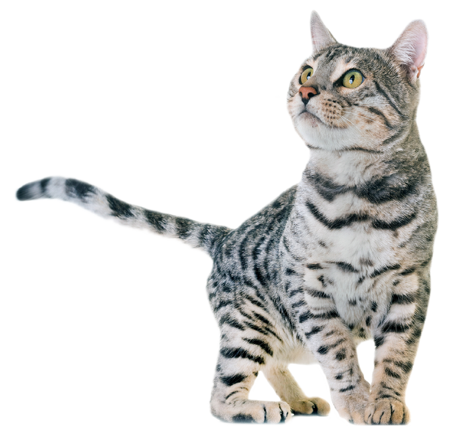
Hay dos formas de refugiarse de las miserias de la vida: la música y los gatos.
Ver mis gatos favoritos 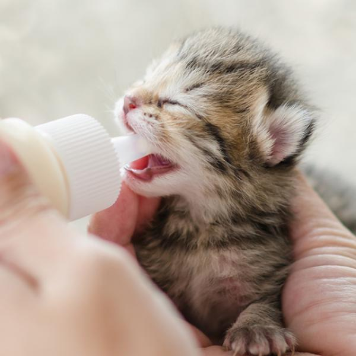
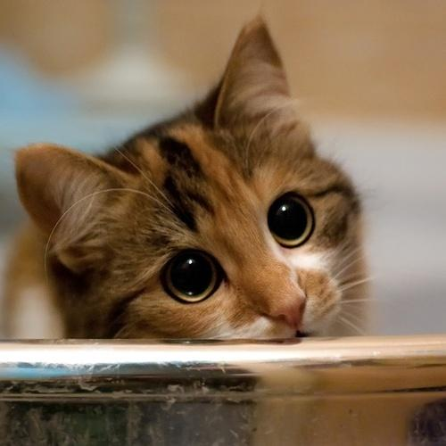
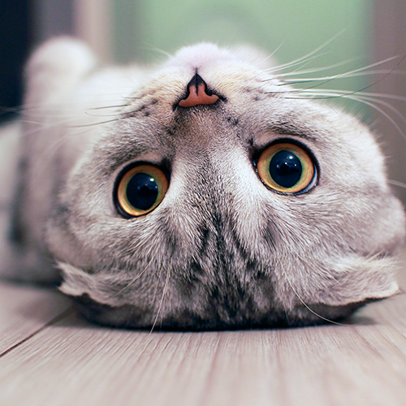
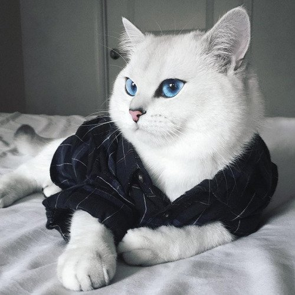
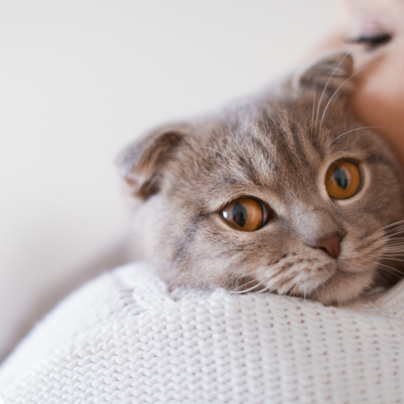
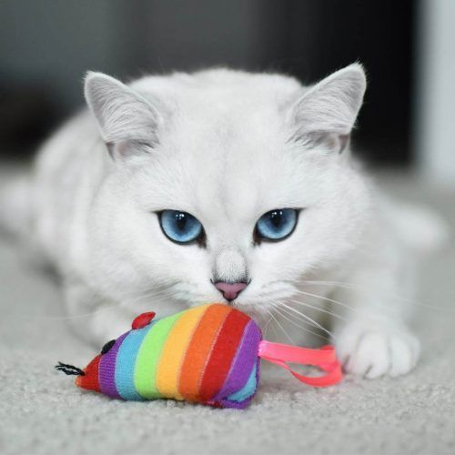
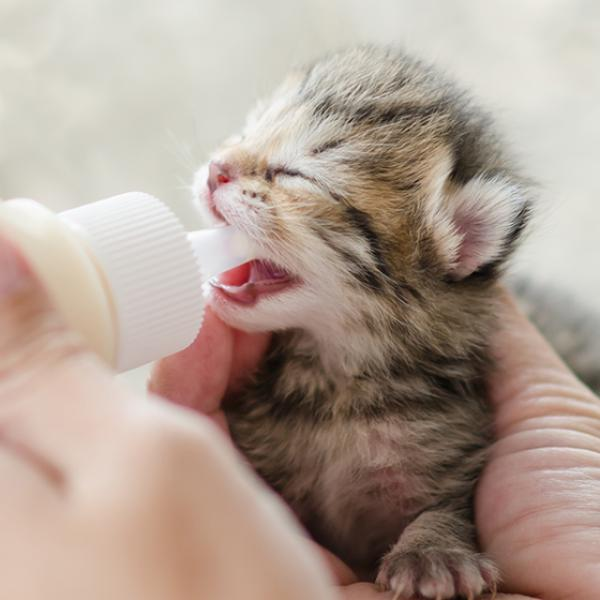
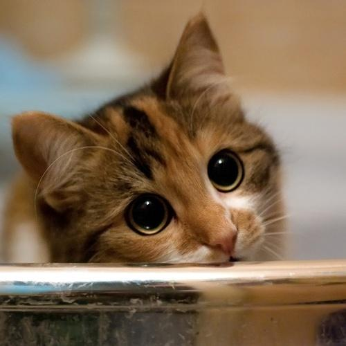
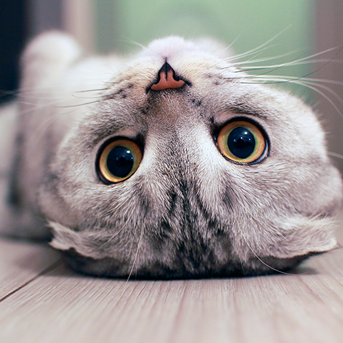
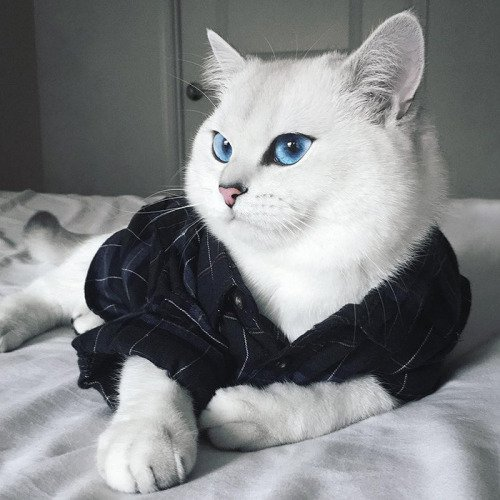
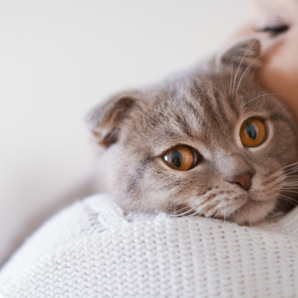
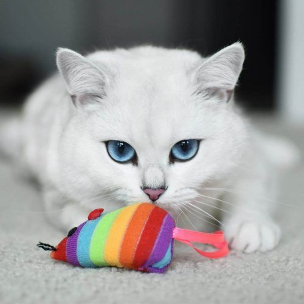
Recuerdo muy bien la primera vez que tuve un gato. Mis padres me lo regalaron para
que me hiciera compañía. Luego descrubí que lo compraron solo
para que se comiera a los ratones que asechaban nuestro hogar. Lamentablemente un día
de tantos, mi probre gatito apareció muerto en nuestro patio. Supongo que un vecino
le dió veneno, ya que mi gato siempre iba a su casa. Desde ese momento nunca he
volvido a tener gatos.
Independientemente de eso que me pasó, el tener un gato como mascota fué
una de las mejores experiencias de mi vida, ya que los gatos son tiernos, lindos
bien esponjosos y hacen buena compañía, ¡ah! y también porque se comen a los
ratones. Por esta y muchas razones más, los gatos me gustan.